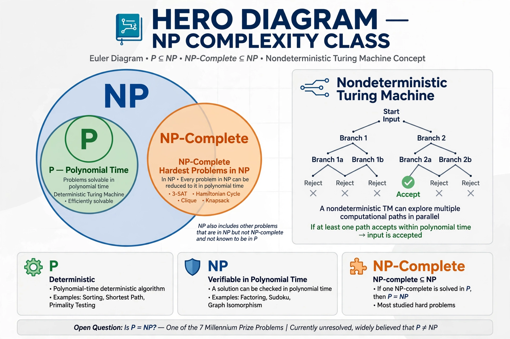

In computational complexity theory, NP (nondeterministic polynomial time) is a complexity class used to classify decision problems. A problem is in NP if, given a 'yes' answer, there exists a certificate (witness) that can be verified in polynomial time by a deterministic Turing machine; equivalently, it can be solved in polynomial time by a nondeterministic Turing machine.

| Field | Computational complexity theory |
|---|---|
| Notation | NP |
Examples include Boolean satisfiability, graph colourability, the subset sum problem, and integer factorisation (decision version). Many natural problems in NP are NP-complete, the hardest in the class. NP's complement class is co-NP, whose certificates verify 'no' answers.
Whether every problem whose solution can be verified quickly can also be solved quickly — P = NP? — is one of the great open problems in computer science and mathematics, listed among the Millennium Prize Problems with a $1 million prize. Most researchers believe P ≠ NP. The question matters for cryptography, optimisation and algorithm design.
The class was introduced in work by Stephen Cook and Leonid Levin around 1971, building on earlier notions of nondeterminism and proof verification discussed by researchers including Alan Cobham and Jack Edmonds.